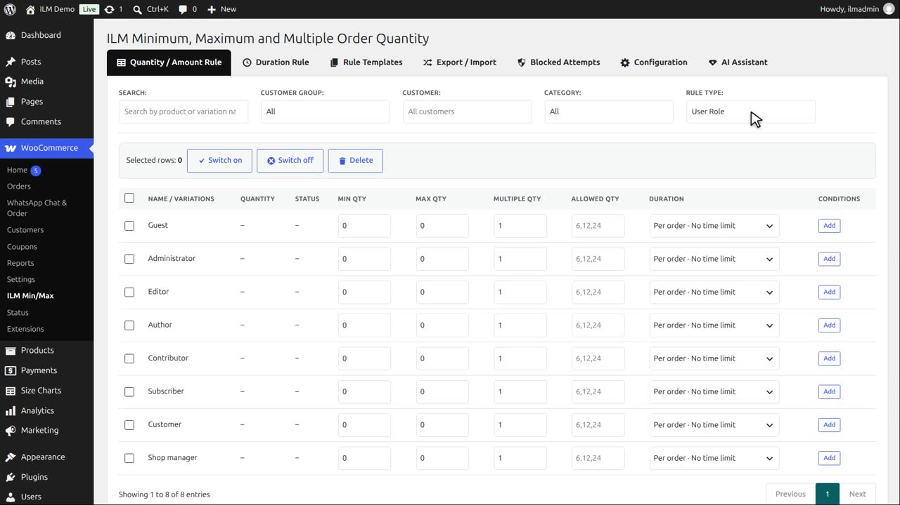
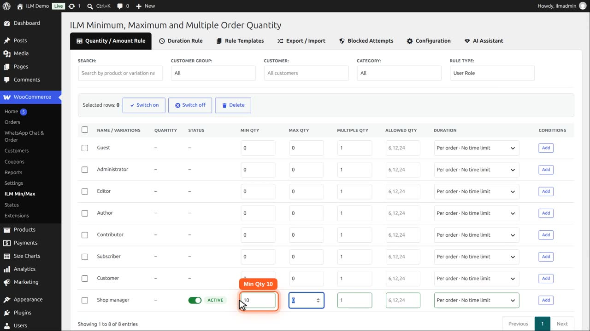
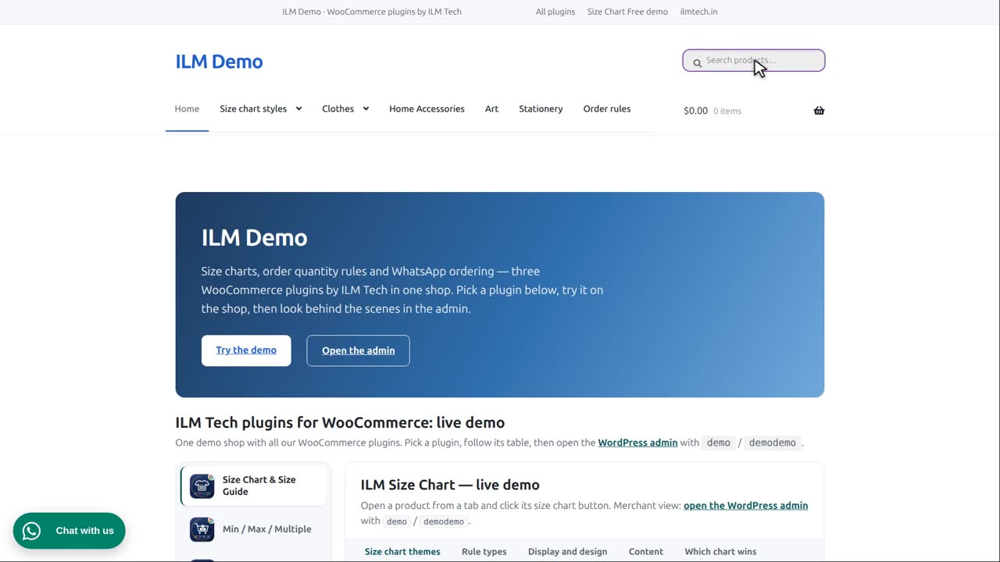
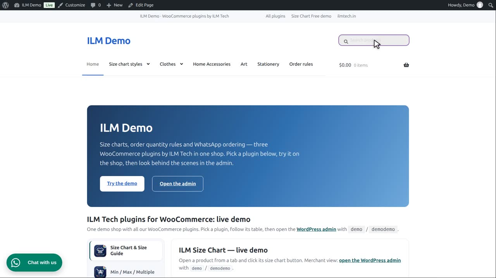
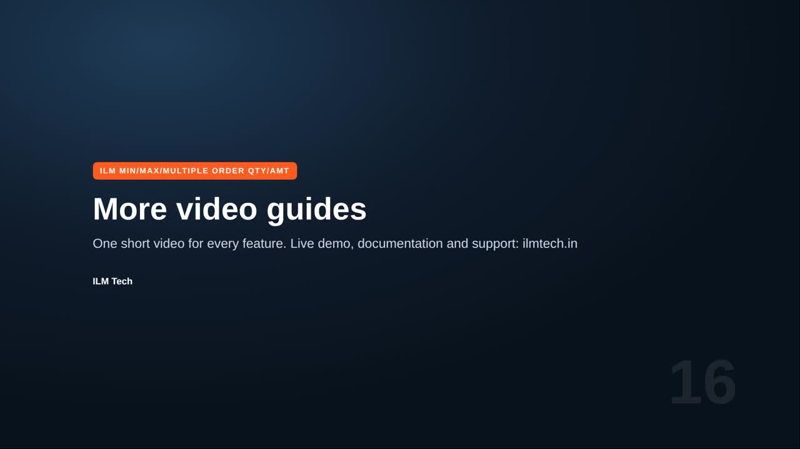

Pro add-on. This feature needs the Pro add-on. See Free and Pro.
| Level | What it does |
|---|---|
| User Role Rule | Attach a rule to a user role, so different roles get different limits. |
Apply Rule to Individual Products (shown for Category / Brand / Tag / User Role / Global): Enable checks the limit separately for each product under that rule; Disable pools every product under the rule into one shared total.
Set Rule Type to User Role. The table lists the roles of your shop, and Guest for visitors who are not logged in.

In this demo, our wholesale buyer has the role Shop manager. For that role, type ten in Min Qty.

The User Role Rule card is enabled, and the rule applies to each product on its own.

A visitor who is not logged in sees no minimum. They can order one mug.

Now the wholesale buyer logs in. The same mug shows minimum order ten, and the box starts at ten. Other roles can have limits of their own.
